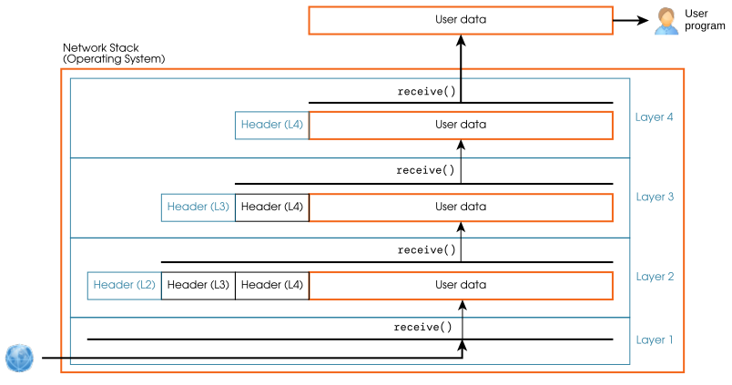

[5] Una pila de capes¶
La comunicació moderna entre ordinadors s’aconsegueix fent servir una pila de capes de xarxa. Cada pila se centra en alguns problemes i és responsable de proporcionar certes funcionalitats, p. ex., l’adreçament i la seqüenciació correcta (presentats en els capítols anteriors).
Cada capa defineix una parella de funcions send/receive, que és responsable d’algunes d’aquestes funcionalitats. Cada capa fa servir el send i el receive de la capa inferior, és a dir, les funcionalitats d’una capa es basen en les funcionalitats de totes les capes que té per sota.
Per coordinar les capes i permetre una comunicació virtual entre elles, cada capa defineix un format de paquet diferent, que encapsula un paquet de la capa superior.
[5.1] Enviament de dades¶
Per implementar aquestes capacitats, cada capa transmet no només les dades (data) proporcionades per la capa superior, sinó també una capçalera amb tota la metainformació necessària per a aquella capacitat. Així, cada capa ha de definir el format de paquet, afegint una certa sobrecàrrega (típicament una capçalera) al payload (càrrega útil), p. ex.:

Quan un programa d’usuari vol enviar dades, fa servir el mètode send de la capa superior de la pila, cosa que acaba fent que la capa física transmeti dades, p. ex., a través d’un cable o d’una antena. La figura següent mostra l’estructura d’una pila de 4 capes:

Els paquets que produeix cada capa s’anomenen genèricament PDUs (Protocol Data Unit, unitat de dades del protocol). Les PDUs de cada capa tenen noms específics com ara frame (trama), datagrama o segment. Aquests noms s’han de fer servir amb precisió en contextos tècnics.
Cada capa inclou la PDU de la capa superior dins la definició del format de paquet de la seva PDU. Aquest procés s’anomena encapsulació.
Exercici 5.1
El programa d’usuari vol enviar \(420\) bytes de dades fent servir la pila de la figura anterior. Suposa una mida de capçalera per a les capes 2, 3 i 4 de \(14\) bytes, \(20\) bytes i \(20\) bytes, respectivament.
-
Quina és la mida del payload i la mida de la sobrecàrrega de la PDU de cada capa?
-
Quina és la mida del payload i la mida de la sobrecàrrega de tota la pila?
[5.2] Recepció de dades¶
Quan un paquet arriba a la pila de xarxa del destinatari, es processa en ordre invers, és a dir, les capes es recorren de baix a dalt. Cada capa inspecciona només la capçalera corresponent a aquella capa. Si tot és correcte, la capa elimina la capçalera i passa la resta del paquet a la capa superior. Al seu torn, la capa de més amunt passa les dades restants (el payload) al destinatari. Continuant amb l’exemple de la pila de 4 capes:

En una pila de xarxa, només la capa inferior interactua directament amb l’exterior, p. ex., només la targeta de xarxa física d’un ordinador està connectada a un cable que porta dades cap a altres ordinadors. Alhora, les dades enviades per la capa inferior inclouen les PDUs de totes les capes mitjançant l’encapsulació. Gràcies a això, hi ha una comunicació virtual entre cada capa d’un extrem i la seva homòloga a l’altre extrem de la comunicació. La figura següent representa la comunicació real (línia contínua) i virtual (línia discontínua) del nostre exemple:

Exercici 5.2
Un altre exemple de pila de xarxa té 3 capes: L1, L2 i L3, de baix a dalt.
La PDU de la capa L2 és la següent:
La PDU de la capa L3 és la següent:
La capa L1 rep un paquet de dades i la seva funció receive retorna les dades següents (suposa enters sense signe i ordre big endian (primer el byte més significatiu) quan calgui:
01 23 00 0a 01 00 00 06 00 aa 00 bb 43 20
-
Quin payload de dades s’ha enviat al programa destinatari en aquest paquet?
-
Si aquest és l’últim paquet de la comunicació, quantes dades (payload) s’han enviat al programa d’usuari destinatari?
-
Com a màxim, quants ordinadors diferents es poden connectar fent servir aquesta pila?
-
Enviem un fitxer com a payload d’aquesta pila. Quina és la seva mida màxima possible?
snippets/encapsulation.py
import typing
import struct
def layer2_encapsulate(address: int, data: bytes) -> bytes:
"""Encapsulate a PDU of layer 3 into a PDU of layer 2."""
assert 0x0000 <= address <= 0xffff, "Invalid layer 2 address"
assert len(data) <= 0xffff, "Too much data for a layer 2 PDU"
return bytes(struct.pack(">H", address)
+ struct.pack(">H", len(data))
+ data)
def layer3_encapsulate(offset: int, data: bytes) -> bytes:
"""Encapsulate a chunk of user data into a PDU of layer 3."""
assert 0x0000 <= offset <= 0xffff, "Invalid layer 3 offset"
assert len(data) <= 0xffff, "Too much data for a layer 3 PDU"
return bytes(struct.pack(">H", offset)
+ struct.pack(">H", len(data))
+ data)
def stack_send(data: bytes, output_file: typing.BinaryIO):
layer3_pdu = layer3_encapsulate(offset=0, data=data)
layer2_pdu = layer2_encapsulate(address=0xabcd, data=layer3_pdu)
output_file.write(layer2_pdu)
if __name__ == '__main__':
with (open(__file__, "rb") as input_file,
open("/dev/stdout", "wb") as output_file):
payload = input_file.read()
stack_send(data=payload, output_file=output_file)
��\x04�\x00\x00\x04�import typing
import struct
def layer2_encapsulate(address: int, data: bytes) -> bytes:
"""Encapsulate a PDU of layer 3 into a PDU of layer 2."""
assert 0x0000 <= address <= 0xffff, "Invalid layer 2 address"
assert len(data) <= 0xffff, "Too much data for a layer 2 PDU"
return bytes(struct.pack(">H", address)
+ struct.pack(">H", len(data))
+ data)
def layer3_encapsulate(offset: int, data: bytes) -> bytes:
"""Encapsulate a chunk of user data into a PDU of layer 3."""
assert 0x0000 <= offset <= 0xffff, "Invalid layer 3 offset"
assert len(data) <= 0xffff, "Too much data for a layer 3 PDU"
return bytes(struct.pack(">H", offset)
+ struct.pack(">H", len(data))
+ data)
def stack_send(data: bytes, output_file: typing.BinaryIO):
layer3_pdu = layer3_encapsulate(offset=0, data=data)
layer2_pdu = layer2_encapsulate(address=0xabcd, data=layer3_pdu)
output_file.write(layer2_pdu)
if __name__ == '__main__':
with (open(__file__, "rb") as input_file,
open("/dev/stdout", "wb") as output_file):
payload = input_file.read()
stack_send(data=payload, output_file=output_file)
Exercici 5.3
El codi anterior agafa unes dades i escriu els bytes que s’enviarien a la capa 1 (la capa física) de la pila de xarxa de l’exercici 5.2. Implementa l’extrem receptor de la pila de la manera següent:
-
Implementa una funció
layer2_decapsulate(data: bytes) -> (int, bytes)que rebi una PDU de capa 2 i retorni la tupla(address, payload), onaddressés l’adreça de destinació ipayloadés la PDU de capa 3 encapsulada. -
Implementa una funció
layer3_decapsulate(data: bytes) -> (int, bytes)que rebi una PDU de capa 3 i retorni la tupla(offset, payload), onoffsetés l’offset (desplaçament) del payload, ipayloadés el fragment de dades enviat per l’altre extrem de la comunicació. -
Implementa una funció
stack_receive(data: bytes)que descodifiqui una PDU de capa 1 (fent servir les dues funcions anteriors) i imprimeixi una línia de missatge semblant a"Received a chunk of data. Length: 12 bytes, Address: 0xabcd, Offset: 0." -
Completa la funció
stack_sendperquè les dades d’entrada es divideixin en fragments de com a màxim 100 bytes, es produeixi una PDU de capa 1 vàlida per a cadascun d’aquests fragments, i aquestes PDUs de capa 1 es passin astack_receive. -
La teva implementació funcionaria si les PDUs de capa 1 s’ordenessin aleatòriament abans de passar-les a la pila receptora?
Nota
La biblioteca struct de Python és útil, però no obligatòria, per donar format als bytes dels paquets.